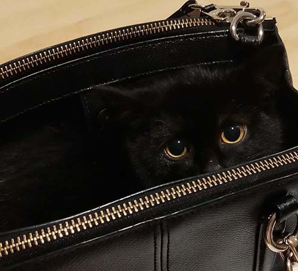
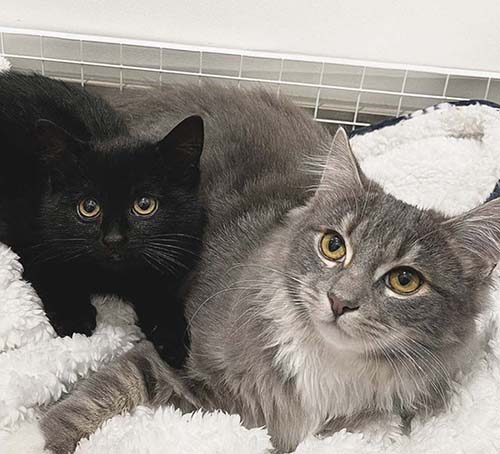
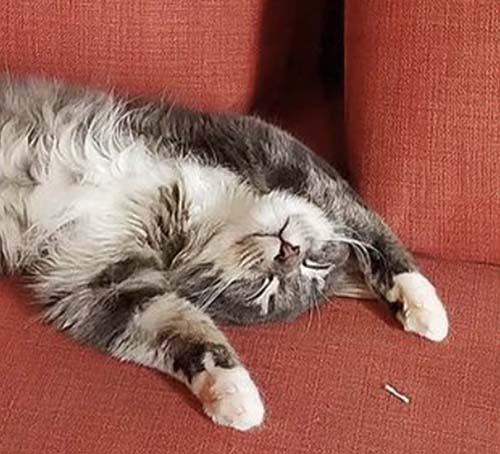
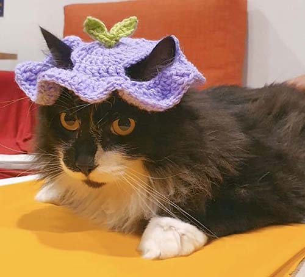

Background
As a Melbourne-based UX designer transitioning into web development, I’m excited to blend my design skills with my growing expertise in web technologies. My goal is to be able to build innovative, interactive websites that focus on user-centred experiences to delight users and elevate brands.
Outside of my professional pursuits, I have a strong passion for music and culinary arts. In my free time, I enjoy playing the piano and baking, which enhances my creativity and attention to detail in all aspects of my work.
I have a soft spot for animals. I love fostering cats, giving them a safe home until they find forever families. Each furry friend brings me joy and a sense of purpose. Here's some pictures of my foster cats:
   Goals
I want to master the process of building web sites and increase my knowledge, skills and abilities in:
- HTML
- CSS
- JavaScript
- Ruby
- Rails
I’d like to work for a web design firm helping clients create an impressive online presence.